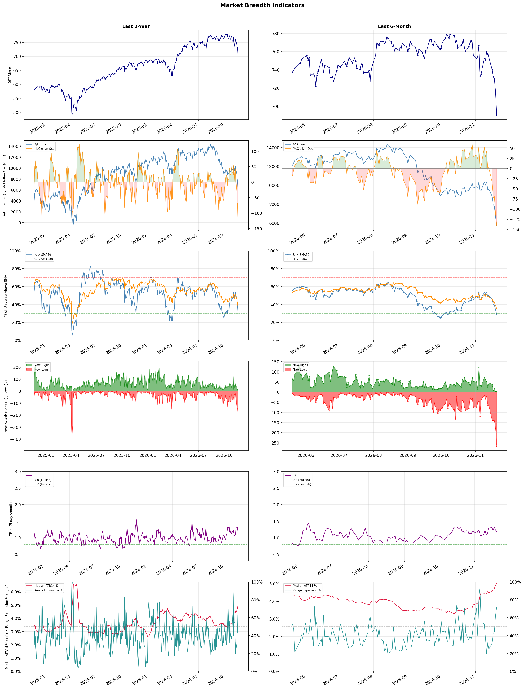

A daily market breadth and sector rotation report for active investors
| Item | Read |
|---|---|
| Regime | Defensive |
| Risk posture | Defensive |
| Universe | 1,310 stocks tracked · 2 new 52-week highs · 30 active swing setups |
| Breadth | only 29.2% of tracked stocks are above SMA50, new lows exceed new highs (269 vs 2), McClellan oscillator (breadth momentum) is negative at -141.3 |
| Leadership | Insurance Brokers, Advertising Agencies, and Discount Stores |
| Weakest groups | Other Industrial Metals & Mining, Uranium, and Computer Hardware |
Use this report to prioritize research and chart review; validate entries, stops, liquidity, earnings, and risk before acting.
| Item | Read |
|---|---|
| Primary read | Defensive regime with Defensive risk posture. |
| Research queue | MRSH, AJG, BWIN, ARX, AON |
| Leadership focus | Insurance Brokers, Advertising Agencies, and Discount Stores |
| Caution list | Other Industrial Metals & Mining, Uranium, and Computer Hardware |
| Review prompt | Check extension risk, chart location, fundamentals, valuation, and earnings before using any research row. |
| Item | Read |
|---|---|
| Primary read | 5 active risk warnings; use screen output as watchlist input only. |
| Bullish screens | TAK, IBN, RRC |
| Bearish screens | BROS, LMND, CIG, TLRY, COIN |
| Alerts / levels | Automated trigger, stop, ATR, liquidity, reward/risk, and event-risk levels are pending future enrichment. |
| Review prompt | Open the linked chart, define trigger and invalidation, then check liquidity and event risk independently. |
Risk Posture: Defensive — screen backdrop favors caution; require independent risk review before new exposure
Metric context: McClellan below -50 = elevated selling pressure; below -100 = washout territory. Range Expansion = share of stocks with daily range above their 20-day average. Signal Density = share of tracked names appearing in signal screens.
| Breadth Date | % > SMA50 | % > SMA200 | New Highs | New Lows | McClellan | Median Range | Avg Range | Median ATR14 | Range Expansion | Signal Density |
|---|---|---|---|---|---|---|---|---|---|---|
| 2026-11-20 | 29.2% | 35.5% | 2 | 269 | -141.3 | 4.8% | 6.1% | 5.0% | 71.7% | 7.8% |

Prior comparison date: November 19, 2026
| Metric | Prior | Current | Change |
|---|---|---|---|
| Regime | Defensive | Defensive | unchanged |
| Risk Posture | Defensive | Defensive | unchanged |
| % > SMA50 | 34.1% | 29.2% | -5.0 pts |
| % > SMA200 | 38.6% | 35.5% | -3.2 pts |
| New Highs | 2 | 2 | +0 |
| New Lows | 180 | 269 | -89 |
Top-10 industries entering: none. Top-10 industries leaving: none. New multi-signal long setups: IBN. New multi-signal short setups: ALHC, ATEC, BANC, BROS, CIG, FLNC, GERN, GMED, HESM.
| Status | Tickers | Read |
|---|---|---|
| Added | ALHC, ATEC, BANC, BROS, CIG, FLNC, GERN, GMED | New technical screen matches vs prior report. |
| Removed | AGNT, ARCO, BL, EXE, FIS, GDS, GGAL, GNL | No longer present in today's technical screen matches. |
| Still Active | ALB, ALLO, BTDR, COIN, FIG, GNW, IQ, LMND | Appeared in both current and prior reports. |
| Promoted | none | Model Screen Score improved by at least 15 points. |
| Downgraded | none | Model Screen Score declined by at least 15 points. |
| Direction | Industry | ETF | Prior Rank | Current Rank | Days | Rank Change |
|---|---|---|---|---|---|---|
| Rose | Resorts & Casinos | N/A | 85 | 20 | 42 | +65 |
| Rose | REIT - Retail | N/A | 75 | 15 | 42 | +60 |
| Rose | Airlines | N/A | 77 | 21 | 35 | +56 |
| Rose | Telecom Services | N/A | 76 | 27 | 42 | +49 |
| Rose | Utilities - Regulated Electric | XLU | 58 | 11 | 42 | +47 |
Bull: The Resorts & Casinos sector is experiencing a rise in relative strength primarily due to robust earnings reports from key players like MGM Resorts and Bally's, indicating strong consumer demand in the discretionary spending category. Additionally, the focus on deal-making within the sector, as highlighted by recent headlines, suggests a strategic consolidation that could enhance operational efficiencies and drive future growth, positioning the industry favorably amidst broader economic trends. This positive sentiment is further supported by forecasts from analysts, such as those from The Motley Fool, which indicate a bullish outlook for casino stocks through 2026.
Bear: While recent earnings reports may suggest strong consumer demand, the broader economic environment remains uncertain, with rising interest rates and inflation potentially dampening discretionary spending in the future. Additionally, the focus on deal-making could be a sign of desperation among operators to consolidate in a slowing growth environment, rather than a strategic move towards enhanced efficiencies. This indicates that the current relative strength may be more of a short-term illusion rather than a sustainable upward trend for the Resorts & Casinos sector.
Verdict: The Resorts & Casinos sector's rise is fundamentally driven by strong earnings from major players like MGM Resorts and Bally's, reflecting robust consumer demand in discretionary spending, alongside strategic consolidation efforts aimed at enhancing operational efficiencies. However, the key risk lies in the potential impact of rising interest rates and inflation, which could curtail consumer spending and undermine the sector's growth trajectory in the long term. Investors should monitor economic indicators closely to assess the sustainability of this upward trend.
Sources: Google News
Bull: The rising relative strength of the Retail REIT sector can be attributed to the robust performance highlighted in recent earnings reports, such as FrontView REIT's diverse portfolio demonstrating growth and resilience despite economic challenges. Additionally, positive sentiment from analysts, as seen in articles from Morningstar and Yahoo Finance, suggests that investors are recognizing the potential for Retail REITs to navigate higher interest rates and industry headwinds, positioning them as attractive investment opportunities for the near future.
Bear: While the recent earnings reports may show growth for some Retail REITs like FrontView, this performance could be misleading given the broader economic context, including rising interest rates and inflationary pressures that may erode consumer spending and retail sales. Furthermore, the retail landscape is undergoing significant transformation with e-commerce growth and changing consumer preferences, which could undermine the long-term viability of traditional retail spaces, making the current bullish sentiment overly optimistic.
Verdict: The Retail REIT sector's rising strength is primarily driven by solid earnings performance and investor optimism, as evidenced by FrontView REIT's resilience amid economic challenges. However, the key risk lies in the potential for rising interest rates and inflation to dampen consumer spending, coupled with the ongoing shift towards e-commerce, which could threaten the long-term sustainability of traditional retail spaces. Investors should closely monitor these economic indicators and consumer trends to assess the viability of their Retail REIT investments.
Sources: Google News
Bull: The airline industry is experiencing a bullish trend due to a significant rebound in travel demand, as highlighted by Delta Air Lines and American Airlines seeing stock increases of 5% and 4%, respectively, indicating robust consumer interest and spending on air travel. Additionally, despite United Airlines' disappointing earnings, the stock is still rising, suggesting that investors are optimistic about the long-term recovery and profitability potential of the sector, as evidenced by positive sentiment in articles discussing the best airline stocks to buy in 2026. This combination of recovering demand and investor confidence is driving the airlines' relative strength compared to other industries.
Bear: While the recent uptick in airline stocks may appear promising, it is crucial to consider the underlying vulnerabilities that persist in the industry. Disappointing earnings from United Airlines, despite rising stock prices, suggest that market optimism may be disconnected from fundamental performance, raising concerns about sustainability. Additionally, the airline sector remains highly susceptible to economic fluctuations, rising fuel costs, and potential geopolitical tensions, which could dampen consumer demand and profitability in the long run.
Verdict: The airline industry's bullish trend is primarily driven by a strong rebound in travel demand, evidenced by rising stock prices for major carriers like Delta and American Airlines, reflecting robust consumer spending on air travel. However, investors should remain cautious of the underlying vulnerabilities, particularly the disappointing earnings from United Airlines and the sector's susceptibility to economic fluctuations and rising fuel costs, which could undermine long-term profitability.
Sources: Google News
Bull: The rising relative strength of the Telecom Services sector can be attributed to the increasing demand for reliable communication infrastructure, as highlighted by recent headlines discussing the market capitalization of major players like AT&T and the overall growth potential in the sector. Additionally, despite uncertainties introduced by competitors like SpaceX, the focus on robust communication services positions telecom companies favorably, as they are essential for supporting the expanding digital economy and the ongoing rollout of 5G technology. This trend is further reinforced by recommendations from analysts identifying top telecom stocks for investment, indicating strong confidence in the sector's growth trajectory.
Bear: While the rising relative strength of the Telecom Services sector may suggest growth, it overlooks significant headwinds such as intense competition from emerging players like SpaceX, which could disrupt traditional telecom models and pricing structures. Additionally, the sector faces mounting regulatory pressures and rising operational costs, particularly as companies invest heavily in 5G infrastructure, potentially leading to diminished profit margins and a less favorable investment outlook.
Verdict: The Telecom Services sector is experiencing rising strength due to heightened demand for reliable communication infrastructure and the ongoing rollout of 5G technology, which positions established players like AT&T favorably in the expanding digital economy. However, investors should remain cautious of significant risks, particularly from emerging competitors like SpaceX and increasing regulatory pressures that could impact pricing and profit margins. As such, while the sector shows growth potential, careful analysis of competitive dynamics and cost structures is essential before making investment decisions.
Sources: Google News
Bull: The Utilities - Regulated Electric sector is experiencing rising relative strength primarily due to a favorable macroeconomic environment characterized by increasing demand for stable and reliable energy sources amidst ongoing economic uncertainties. Headlines from sources like Morningstar and Zacks highlight a strong interest in utility stocks as safe-haven investments, particularly as investors seek stability and income in the face of potential market volatility. Additionally, the focus on renewable energy and infrastructure investments, as indicated by discussions around companies like NextEra Energy, suggests that regulatory support and a shift towards sustainable energy sources are driving growth and investor confidence in this sector.
Bear: While the utilities sector may currently exhibit rising relative strength, this trend could be misleading as it often reflects a flight to safety rather than genuine growth potential. The increasing regulatory pressures, rising interest rates, and significant capital expenditures required for transitioning to renewable energy sources may strain utility companies' profitability and cash flow. Additionally, as inflation persists and economic conditions fluctuate, the sector's reliance on stable income could lead to underperformance compared to more dynamic sectors that adapt to changing market conditions.
Verdict: The Utilities - Regulated Electric sector is experiencing rising relative strength primarily due to heightened demand for stable energy sources amid economic uncertainties, coupled with increasing investor interest in utility stocks as safe-haven investments. However, key risks include rising interest rates and regulatory pressures that may hinder profitability and cash flow, particularly as companies invest heavily in transitioning to renewable energy. Investors should monitor these economic indicators closely to assess the sustainability of this trend.
Sources: Google News
| Direction | Industry | ETF | Prior Rank | Current Rank | Days | Rank Change |
|---|---|---|---|---|---|---|
| Fell | Copper | COPX | 4 | 83 | 42 | -79 |
| Fell | Semiconductors | SOXX | 11 | 80 | 42 | -69 |
| Fell | Semiconductor Equipment & Materials | SOXX | 14 | 81 | 42 | -67 |
| Fell | Computer Hardware | XLK | 21 | 85 | 42 | -64 |
| Fell | Electronic Components | XLK | 13 | 75 | 42 | -62 |
Bear: While the bull analyst attributes the falling relative strength of copper to temporary market volatility and tariff uncertainties, the broader economic landscape suggests more persistent challenges. The recent headlines indicate a significant downturn in major copper stocks, which may reflect not just short-term profit-taking, but also underlying concerns about slowing global demand and potential oversupply as new mining projects come online. Furthermore, the hype surrounding AI and renewable energy may not translate into immediate or sustained demand for copper, especially if economic conditions worsen or if alternative materials gain traction.
Bull: Copper's relative strength is likely falling due to recent market volatility driven by tariff uncertainties, as highlighted by the Yahoo Finance article, which noted significant drops in major copper stocks like Freeport-McMoRan and Teck Resources. This uncertainty can dampen investor sentiment and lead to profit-taking, overshadowing the long-term demand potential for copper, particularly in sectors like AI and renewable energy, as suggested by the Seeking Alpha article. Additionally, while some stocks are gaining traction, the overall market sentiment remains cautious amidst these macroeconomic headwinds.
Verdict: The copper industry's recent decline is primarily driven by heightened market volatility and tariff uncertainties, leading to profit-taking and cautious investor sentiment. However, a key risk from the bear case is the potential for slowing global demand and oversupply, as new mining projects may exacerbate the situation if economic conditions deteriorate. Investors should remain vigilant about these macroeconomic factors while considering the long-term demand potential from emerging sectors like AI and renewable energy.
Sources: Google News
Bear: While the bull analyst attributes the semiconductor industry's decline to temporary macroeconomic pressures, the persistent falling relative strength trend indicates deeper, structural issues within the sector. Factors such as increasing competition from alternative technologies, potential overcapacity in chip manufacturing, and the ongoing geopolitical tensions affecting supply chains may signal a prolonged downturn rather than a short-lived slump. Additionally, the shift of investor focus to more resilient sectors suggests a lack of confidence in the semiconductor industry's recovery potential, raising concerns about its long-term growth trajectory.
Bull: The recent decline in the relative strength of the semiconductor industry can be attributed to a combination of macroeconomic pressures and market sentiment, as highlighted by the headlines indicating a significant sell-off and the worst two-month slump since 2001. Factors such as rising interest rates, supply chain disruptions, and reduced consumer demand for electronics have likely contributed to the industry's struggles, prompting investors to shift their focus to more resilient sectors like the S&P 500. However, the identification of potential recovery stocks, as noted in articles from US News Money and The Motley Fool, suggests that there may be opportunities for rebound as market conditions stabilize.
Verdict: The semiconductor industry's recent decline is primarily driven by macroeconomic pressures, including rising interest rates and reduced consumer demand, which have led to a significant sell-off and a shift in investor focus to more resilient sectors. However, the bear case highlights a critical risk of deeper structural issues, such as increased competition and potential overcapacity, which could hinder the industry's long-term recovery and growth prospects. Investors should remain cautious and closely monitor these structural challenges while considering opportunities in recovery stocks as market conditions stabilize.
Sources: Google News
Bear: While the bull analyst attributes the sector's decline to a broader tech selloff and short-term profit-taking, it's crucial to recognize that the semiconductor equipment and materials industry faces significant structural challenges, including supply chain disruptions and rising production costs. Furthermore, the recent headlines suggesting strong demand for AI chips may be overly optimistic, as the market is saturated with competing technologies and companies may struggle to achieve profitability amidst intense competition. This combination of macroeconomic pressures and industry-specific headwinds could lead to a prolonged downturn in the sector, undermining the bullish narrative.
Bull: The Semiconductor Equipment & Materials sector is experiencing a decline in relative strength primarily due to a broader tech sector selloff, as indicated by the 10% slide in Applied Materials' stock amid negative sentiment in the market. Additionally, while there is optimism surrounding AI chip demand, as highlighted by Bernstein's bullish outlook on top semiconductor equipment stocks, the immediate pressure from macroeconomic factors and profit-taking may be overshadowing the long-term growth potential in this industry.
Verdict: The Semiconductor Equipment & Materials sector's decline is primarily driven by broader tech market pressures and profit-taking, which overshadow the potential growth from AI chip demand. However, key risks from the bear case include persistent supply chain disruptions and rising production costs, alongside intense competition that could hinder profitability and prolong the downturn. Investors should remain cautious and monitor these structural challenges while considering opportunities in companies with strong fundamentals and innovative technologies.
Sources: Google News
Bear: While the bull analyst attributes the decline in the Computer Hardware sector to broader market sentiment and a shift towards emerging technologies, this overlooks the fundamental challenges facing traditional hardware companies, such as supply chain disruptions, rising component costs, and diminishing demand for legacy products. Furthermore, the increasing focus on quantum computing and other innovative technologies indicates that investor capital may be moving away from established hardware firms that lack the agility or vision to adapt, potentially leading to a prolonged downturn in the sector as investors seek more promising growth opportunities.
Bull: The recent decline in the relative strength of the Computer Hardware sector appears to be driven by broader market sentiment, as indicated by sector-wide selling highlighted in the Arista Networks drop and the Shanghai Composite Index's performance, which reflects global economic concerns. Additionally, the focus on emerging technologies like quantum computing, as noted in multiple headlines, suggests a shift in investor interest towards more innovative segments, potentially sidelining traditional hardware stocks in favor of companies positioned for future growth in cutting-edge technologies.
Verdict: The Computer Hardware sector's decline is primarily driven by fundamental challenges such as supply chain disruptions, rising component costs, and waning demand for legacy products, which are exacerbated by a broader market sentiment shift towards emerging technologies like quantum computing. The key risk from the bear case is that traditional hardware companies may struggle to adapt to these changes, leading to a prolonged downturn as investors increasingly favor more innovative firms with growth potential. Investors should consider reallocating their portfolios to focus on companies that are better positioned to capitalize on these technological advancements.
Sources: Google News
Bear: While the bull analyst attributes the decline in the electronic components sector's relative strength to a shift in investor focus towards niche markets, this overlooks the fundamental challenges facing the industry, such as supply chain disruptions, rising raw material costs, and increasing competition from low-cost manufacturers. Additionally, the broader economic environment, characterized by tightening monetary policy and potential recessionary pressures, could lead to reduced capital expenditures in technology, further dampening demand for electronic components and exacerbating the sector's underperformance. Thus, the shift in investor sentiment may be less about a temporary trend and more indicative of underlying structural weaknesses in the electronic components market.
Bull: The recent decline in the relative strength of the Electronic Components sector can be attributed to a shift in investor focus towards more specialized and high-growth areas, such as robotics and memory stocks, which are highlighted in the recent articles. As investors seek out the "hottest trades" in the tech sector, particularly in memory stocks, traditional electronic components manufacturers may be experiencing reduced demand and attention, leading to a relative underperformance against other industries. This trend reflects a broader macroeconomic environment where innovation and growth potential in niche markets are prioritized over established sectors.
Verdict: The decline in the electronic components sector is primarily driven by fundamental challenges such as supply chain disruptions, rising raw material costs, and heightened competition from low-cost manufacturers, which are exacerbated by a tightening monetary policy and potential recessionary pressures. Investors are shifting their focus to high-growth areas like robotics and memory stocks, but this trend may mask deeper structural weaknesses in the electronic components market. Key risks include a sustained downturn in capital expenditures in technology, which could further diminish demand and lead to prolonged underperformance in the sector.
Sources: Google News
| Industry | Rank | ETF | 7d | 14d | 28d | 42d | Chg 42d | Size | 20D | 60D | Composite | Active Setups |
|---|---|---|---|---|---|---|---|---|---|---|---|---|
| Insurance Brokers | 1 | N/A | 10 | 6 | 5 | 41 | +40 | 6 | 3.4% | 3.8% | 0.926 | 0 |
| Advertising Agencies | 2 | N/A | 1 | 3 | 38 | 46 | +44 | 7 | 14.5% | 5.7% | 0.925 | 1 |
| Discount Stores | 3 | XRT | 7 | 5 | 8 | 7 | +4 | 7 | 5.2% | 14.0% | 0.912 | 0 |
| Restaurants | 4 | N/A | 12 | 13 | 25 | 40 | +36 | 16 | 7.9% | 4.9% | 0.845 | 1 |
| REIT - Hotel & Motel | 5 | XLRE | 6 | 11 | 7 | 8 | +3 | 9 | 0.9% | 8.8% | 0.841 | 0 |
| Beverages - Non-Alcoholic | 6 | XLP | 8 | 9 | 22 | 32 | +26 | 7 | 3.6% | 1.8% | 0.827 | 0 |
| Medical Care Facilities | 7 | IHF | 9 | 8 | 13 | 20 | +13 | 9 | 3.3% | 7.9% | 0.823 | 0 |
| Insurance - Property & Casualty | 8 | KIE | 14 | 20 | 16 | 27 | +19 | 8 | 1.3% | 2.1% | 0.820 | 1 |
| Apparel Manufacturing | 9 | N/A | 2 | 1 | 10 | 26 | +17 | 6 | 3.0% | 14.5% | 0.812 | 0 |
| Specialty Retail | 10 | XRT | 3 | 4 | 12 | 33 | +23 | 13 | 3.2% | 12.2% | 0.779 | 1 |
Rank columns (7d–42d) show the industry's rank that many trading days ago — lower is stronger. Chg 42d = rank change vs 42 trading days ago — positive means the industry moved up. 20D and 60D are the mean stock return within the industry over that period. Active Setups: count of today's swing-trade candidates from this industry appearing across all signal screens.
| Industry | Rank | ETF | 7d | 14d | 28d | 42d | Chg 42d | Size | 20D | 60D | Composite | Active Setups |
|---|---|---|---|---|---|---|---|---|---|---|---|---|
| Other Industrial Metals & Mining | 87 | N/A | 86 | 87 | 85 | 79 | -8 | 21 | -31.4% | -54.9% | 0.015 | 0 |
| Uranium | 86 | URA | 87 | 86 | 87 | 83 | -3 | 6 | -29.3% | -57.0% | 0.023 | 0 |
| Computer Hardware | 85 | XLK | 82 | 84 | 62 | 21 | -64 | 15 | -32.9% | -42.3% | 0.055 | 0 |
| Electrical Equipment & Parts | 84 | XLI | 85 | 83 | 86 | 71 | -13 | 12 | -27.4% | -47.7% | 0.055 | 0 |
| Copper | 83 | COPX | 84 | 76 | 61 | 4 | -79 | 6 | -28.4% | -45.0% | 0.059 | 0 |
| Chemicals | 82 | N/A | 68 | 66 | 66 | 84 | +2 | 8 | -25.2% | -31.0% | 0.097 | 0 |
| Semiconductor Equipment & Materials | 81 | SOXX | 79 | 85 | 77 | 14 | -67 | 17 | -20.5% | -34.9% | 0.108 | 0 |
| Semiconductors | 80 | SOXX | 75 | 80 | 67 | 11 | -69 | 37 | -23.3% | -32.1% | 0.111 | 0 |
| Gold | 79 | GDX | 81 | 55 | 63 | 38 | -41 | 25 | -18.0% | -38.5% | 0.113 | 0 |
| Solar | 78 | TAN | 53 | 28 | 75 | 82 | +4 | 8 | -20.2% | -33.8% | 0.113 | 0 |
Rank columns (7d–42d) show the industry's rank that many trading days ago — lower is stronger. Chg 42d = rank change vs 42 trading days ago — positive means the industry moved up. 20D and 60D are the mean stock return within the industry over that period. Active Setups: count of today's swing-trade candidates from this industry appearing across all signal screens.
These are research candidates from top-ranked stocks, capped at five names per industry to avoid over-concentration. Returns shown (60D, 120D, 250D) are historical — they reflect where prices have already moved, not forward expectations. Extension Risk flags names that may require extra patience or a better entry point. They are not buy signals.
Chart: TV = TradingView chart (opens in browser); PDF = local chart file (if downloaded).
| Ticker | Name | Industry | Industry Rank | Market Cap | 60D Hist | 120D Hist | 250D Hist | Extension Risk | Research Reason | Chart |
|---|---|---|---|---|---|---|---|---|---|---|
| MRSH | Marsh | Insurance Brokers | 1 | N/A | 9.2% | 29.2% | 16.5% | Constructive | Top-ranked in industry | TV |
| AJG | Arthur J. Gallagher | Insurance Brokers | 1 | N/A | 7.6% | 36.5% | 12.4% | Constructive | Top-ranked in industry | TV |
| BWIN | Baldwin Insurance Group | Insurance Brokers | 1 | N/A | 6.6% | 65.0% | 15.6% | Constructive | Top-ranked in industry | TV |
| ARX | Accelerant Holdings | Insurance Brokers | 1 | N/A | 1.0% | 27.1% | 53.4% | Constructive | Top-ranked in industry | TV |
| AON | Aon PLC | Insurance Brokers | 1 | N/A | -4.5% | 5.3% | -3.2% | Lagging | Top-ranked in industry; lagging | TV |
| STGW | Stagwell | Advertising Agencies | 2 | N/A | 15.8% | 42.8% | 92.5% | Constructive | Top-ranked in industry | TV |
| APP | Applovin | Advertising Agencies | 2 | N/A | 11.4% | -42.5% | -33.1% | Constructive | Top-ranked in industry | TV |
| EVC | Entravision Communications | Advertising Agencies | 2 | N/A | 7.5% | -3.0% | 232.0% | Constructive | Top-ranked in industry | TV |
| MGNI | Magnite | Advertising Agencies | 2 | N/A | 6.1% | 66.9% | 76.0% | Constructive | Top-ranked in industry | TV |
| OMC | Omnicom Group | Advertising Agencies | 2 | N/A | -2.1% | 15.6% | 18.5% | Lagging | Top-ranked in industry; lagging | TV |
| OLLI | Ollie's Bargain Outlet | Discount Stores | 3 | N/A | 25.9% | 13.6% | -27.6% | Constructive | Top-ranked in industry | TV |
| WMT | Walmart | Discount Stores | 3 | N/A | 24.7% | 13.4% | 22.5% | Constructive | Top-ranked in industry | TV |
| COST | Costco | Discount Stores | 3 | N/A | 18.1% | 15.9% | 23.3% | Constructive | Top-ranked in industry | TV |
| DLTR | Dollar Tree | Discount Stores | 3 | N/A | 8.6% | 26.1% | 35.5% | Constructive | Top-ranked in industry | TV |
| TGT | Target | Discount Stores | 3 | N/A | 0.6% | 36.6% | 95.8% | Constructive | Top-ranked in industry | TV |
| SG | Sweetgreen | Restaurants | 4 | N/A | 79.1% | 43.4% | 80.4% | Extended | Top-ranked in industry; extended | TV |
| WING | Wingstop | Restaurants | 4 | N/A | 38.1% | 0.9% | -37.9% | Constructive | Top-ranked in industry | TV |
| YUMC | Yum China | Restaurants | 4 | N/A | 10.9% | 15.5% | 5.6% | Constructive | Top-ranked in industry | TV |
| WEN | The Wendy's Co | Restaurants | 4 | N/A | 10.9% | 20.3% | 10.4% | Constructive | Top-ranked in industry | TV |
| CMG | Chipotle Mexican Grill | Restaurants | 4 | N/A | -4.5% | 21.5% | 12.4% | Lagging | Top-ranked in industry; lagging | TV |
These are technical screen matches from existing signal files. They are not trade recommendations. Trigger, stop, ATR, liquidity, reward/risk, and event risk still require separate validation until those inputs are available.
Model Screen Score is weighted by signal count, industry rank, freshness, and setup type. It is not a probability of profit, expected return, or suitability rating. Industry cap: max 3 candidates per industry.
Signal glossary: Momentum Pullback = stock in an uptrend that has pulled back 10–30% and shows re-entry conditions. MA Compression = short- and long-term moving averages converging, often preceding a directional move. Three-Day Up/Down = three consecutive closes in the same direction. New 52Wk High/Low = price reached a new annual extreme.
Chart: TV = TradingView chart (opens in browser); PDF = local chart file (if downloaded).
| Ticker | Industry | Setups | Close | Industry Rank | Signal Count | Model Screen Score | Reason | Chart |
|---|---|---|---|---|---|---|---|---|
| TAK | Drug Manufacturers - Specialty & Generic | New 52Wk High; Three-Day Up | 21.77 | 14 | 2 | 85 | Multi-signal; new-high strength | TV |
| IBN | Banks - Regional | New 52Wk High; Three-Day Up | 35.47 | 51 | 2 | 65 | Multi-signal; new-high strength | TV |
| RRC | Oil & Gas E&P | Momentum Pullback | 47.94 | 59 | 2 | 50 | Multi-signal; pullback setup | TV |
Bearish setups — stocks making new lows or showing persistent downside patterns. Validate carefully before acting.
| Ticker | Industry | Setups | Close | Industry Rank | Signal Count | Model Screen Score | Reason | Chart |
|---|---|---|---|---|---|---|---|---|
| BROS | Restaurants | New 52Wk Low; Three-Day Down | 32.78 | 4 | 2 | 63 | Multi-signal; new-low weakness | TV |
| LMND | Insurance - Property & Casualty | New 52Wk Low; Three-Day Down | 35.46 | 8 | 2 | 55 | Multi-signal; new-low weakness | TV |
| CIG | Utilities - Regulated Electric | New 52Wk Low; Three-Day Down | 1.76 | 11 | 2 | 55 | Multi-signal; new-low weakness | TV |
| TLRY | Drug Manufacturers - Specialty & Generic | New 52Wk Low; Three-Day Down | 1.89 | 14 | 2 | 55 | Multi-signal; new-low weakness | TV |
| COIN | Financial Data & Stock Exchanges | New 52Wk Low; Three-Day Down | 101.97 | 19 | 2 | 47 | Multi-signal; new-low weakness | TV |
| NKE | Footwear & Accessories | New 52Wk Low; Three-Day Down | 32.92 | 24 | 2 | 47 | Multi-signal; new-low weakness | TV |
| PRIM | Engineering & Construction | New 52Wk Low; Three-Day Down | 53.60 | 26 | 2 | 40 | Multi-signal; new-low weakness | TV |
| LUMN | Telecom Services | New 52Wk Low; Three-Day Down | 3.83 | 27 | 2 | 40 | Multi-signal; new-low weakness | TV |
| IQ | Entertainment | New 52Wk Low; Three-Day Down | 0.49 | 28 | 2 | 40 | Multi-signal; new-low weakness | TV |
| NFLX | Entertainment | New 52Wk Low; Three-Day Down | 56.73 | 28 | 2 | 40 | Multi-signal; new-low weakness | TV |
| ATEC | Medical Devices | New 52Wk Low; Three-Day Down | 6.68 | 35 | 2 | 40 | Multi-signal; new-low weakness | TV |
| GMED | Medical Devices | New 52Wk Low; Three-Day Down | 66.89 | 35 | 2 | 40 | Multi-signal; new-low weakness | TV |
| QDEL | Medical Devices | New 52Wk Low; Three-Day Down | 8.32 | 35 | 2 | 40 | Multi-signal; new-low weakness | TV |
| GNW | Insurance - Life | New 52Wk Low; Three-Day Down | 7.58 | 36 | 2 | 40 | Multi-signal; new-low weakness | TV |
| HESM | Oil & Gas Midstream | New 52Wk Low; Three-Day Down | 29.05 | 39 | 2 | 40 | Multi-signal; new-low weakness | TV |
| FLNC | Utilities - Renewable | New 52Wk Low; Three-Day Down | 3.46 | 40 | 2 | 40 | Multi-signal; new-low weakness | TV |
| ALHC | Healthcare Plans | New 52Wk Low; Three-Day Down | 6.37 | 42 | 2 | 35 | Multi-signal; new-low weakness | TV |
| ALB | Specialty Chemicals | New 52Wk Low; Three-Day Down | 79.70 | 44 | 2 | 35 | Multi-signal; new-low weakness | TV |
| SQM | Specialty Chemicals | New 52Wk Low; Three-Day Down | 46.97 | 44 | 2 | 35 | Multi-signal; new-low weakness | TV |
| OI | Packaging & Containers | New 52Wk Low; Three-Day Down | 4.21 | 47 | 2 | 35 | Multi-signal; new-low weakness | TV |
| BTDR | Software - Application | New 52Wk Low; Three-Day Down | 2.95 | 49 | 2 | 35 | Multi-signal; new-low weakness | TV |
| FIG | Software - Application | New 52Wk Low; Three-Day Down | 15.77 | 49 | 2 | 35 | Multi-signal; new-low weakness | TV |
| KC | Software - Application | New 52Wk Low; Three-Day Down | 5.47 | 49 | 2 | 35 | Multi-signal; new-low weakness | TV |
| ALLO | Biotechnology | New 52Wk Low; Three-Day Down | 0.63 | 50 | 2 | 35 | Multi-signal; new-low weakness | TV |
| GERN | Biotechnology | New 52Wk Low; Three-Day Down | 0.87 | 50 | 2 | 35 | Multi-signal; new-low weakness | TV |
| IMNM | Biotechnology | New 52Wk Low; Three-Day Down | 15.69 | 50 | 2 | 35 | Multi-signal; new-low weakness | TV |
| BANC | Banks - Regional | New 52Wk Low; Three-Day Down | 16.25 | 51 | 2 | 35 | Multi-signal; new-low weakness | TV |
How To Use This Report
| Use | Purpose |
|---|---|
| Market map | Start with breadth, regime, risk warnings, and what changed since the prior report. |
| Industry scan | Use leading, deteriorating, rising, and declining industries to focus research. |
| Research queue | Treat long-term candidates as names for deeper fundamental, valuation, and chart review. |
| Technical review | Treat bullish and bearish screen matches as watchlist inputs that require independent trigger, stop, liquidity, and event-risk checks. |
| Source follow-up | Use chart links and source files to verify raw inputs before relying on any row. |
What This Report Is Not
| Not | Meaning |
|---|---|
| Investment advice | The report does not evaluate personal objectives, risk tolerance, tax situation, account type, or suitability. |
| Buy/sell recommendation | Named tickers are research candidates or screen matches, not recommendations to transact. |
| Price target | The report does not provide fair value estimates, targets, or expected returns. |
| Trade plan | Trigger, stop, sizing, reward/risk, liquidity, and event-risk review remain separate user work. |
| Performance claim | Model Screen Score is not validated historical performance or a forecast of future results. |
| Item | Note |
|---|---|
| Version | Daily Report Methodology v1 |
| Model Screen Score | Screen-fit rank based on signal count, industry rank, freshness, and setup type. |
| Not predictive proof | The score is not expected return, probability of profit, historical validation, or suitability analysis. |
| Industry ranks | Composite industry ranks use existing daily ranking outputs and historical rank columns when available. |
| Research candidates | Long-term rows are research candidates from ranked stocks and leading industries, with historical returns labeled as historical only. |
| Technical matches | Bullish and bearish rows are screen matches requiring independent chart, trigger, stop, liquidity, and event-risk review. |
| Source | Status | Rows | Path |
|---|---|---|---|
| Market breadth | present | 1255 | breadth_20261120.csv |
| Industry composite rankings | present | 87 | all_industry_composite_20261120.csv |
| Top ranked stocks | present | 88 | top_ranked_composite_20261120.csv |
| All ranked stocks | present | 1310 | all_stocks_composite_sorted_20261120.csv |
| Top momentum pullbacks | present | 1464 | top_momentum_pullbacks_20261120.csv |
| MA compression | present | 1464 | ma_compression_stocks_20261120.csv |
| Three-day up/down | present | 343 | three_day_up_down_stocks_20261120.csv |
| New 52-week members | present | 271 | breadth_new_52wk_members_20261120.csv |
This report is generated from automated technical screens and is for informational and research purposes only. It is not investment advice, a solicitation, or a recommendation to buy or sell any security. Past performance is not indicative of future results. You are solely responsible for your own investment decisions. Consult a licensed financial advisor before acting on any information herein.